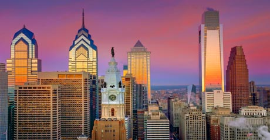

Меню
Филадельфия

Филадельфия (англ. Philadelphia) — один из старейших городов США, пятый по величине населения город страны и самый населённый город штата Пенсильвания, с населением 1 547 607 жителей (по состоянию на 2012 год). Вместе с пригородами 5,7 миллионов жителей. Расположен на реке Делавэр у побережья Атлантического океана.
Филадельфия богата историей и культурой. В исторической части города до сих пор царит атмосфера маленького и тихого городка, каким была и Филадельфия, и другие колониальные города во время образования государства Соединённые Штаты Америки.
Филадельфия — это один из крупнейших промышленных, финансовых и культурных центров США. На протяжении всей своей истории она считалась одним из самых полиэтничных городов Америки: итальянские и ирландские, восточноевропейские и азиатские общины жили бок о бок с многочисленным чёрным населением города, многие из представителей которого приходятся потомками бежавших сюда во времена гражданской войны между Севером и Югом.
Основан в 1682 году Уильямом Пенном. Имеет прозвище «Город братской любви» (смысл названия на греческом языке). В 1776 году в Филадельфии Второй континентальный конгресс тринадцати североамериканских штатов принял Декларацию независимости. В 1781 году, во время войны за независимость 1775—1783 годов Филадельфия стала столицей «соединённых колоний», а в 1790—1800 годах — первой столицей США, самым крупным городом Северной Америки.
Одним из известных жителей города был Бенджамин Франклин.
Copyright © 2014. Все права защищены.